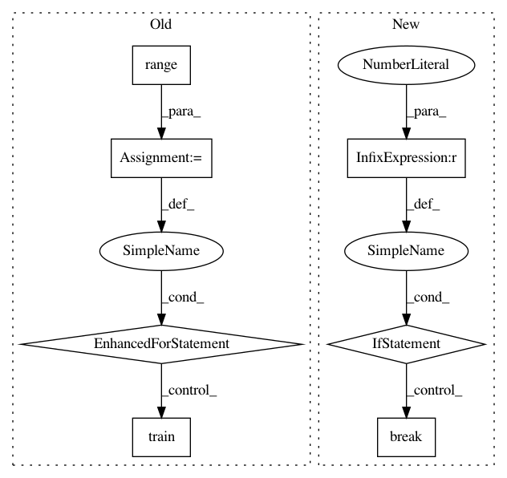

22ccf4365af620d10387b207aa103287c34d9247,benchmarks/benchmarks/model_speed/bench_rgcn_hetero_ns.py,,track_time,#Any#,232
Before Change
hg, {category: train_idx}, sampler,
batch_size=batch_size, shuffle=True, num_workers=4)
for epoch in range(1):
model.train()
embed_layer.train()
optimizer.zero_grad()
sparse_optimizer.zero_grad()
for i, (input_nodes, seeds, blocks) in enumerate(loader):
blocks = [blk.to(device) for blk in blocks]
seeds = seeds[category] // we only predict the nodes with type "category"
batch_tic = time.time()
emb = embed_layer(blocks[0])
lbl = labels[seeds].to(device)
emb = {k : e.to(device) for k, e in emb.items()}
logits = model(emb, blocks)[category]
loss = F.cross_entropy(logits, lbl)
loss.backward()
optimizer.step()
sparse_optimizer.step()
print("start training...")
t0 = time.time()
for epoch in range(n_epochs):
model.train()
After Change
optimizer.step()
sparse_optimizer.step()
if i >= 9: // time 10 loops
break
t1 = time.time()
return (t1 - t0) / (i + 1)
In pattern: SUPERPATTERN
Frequency: 3
Non-data size: 7
Instances
Project Name: dmlc/dgl
Commit Name: 22ccf4365af620d10387b207aa103287c34d9247
Time: 2021-02-08
Author: wmjlyjemaine@gmail.com
File Name: benchmarks/benchmarks/model_speed/bench_rgcn_hetero_ns.py
Class Name:
Method Name: track_time
Project Name: ray-project/ray
Commit Name: 244aafdcf89ae814975c8c4e3faf0bd4995c7878
Time: 2020-09-05
Author: sven@anyscale.io
File Name: rllib/utils/exploration/tests/test_curiosity.py
Class Name: TestCuriosity
Method Name: test_curiosity_on_large_frozen_lake
Project Name: dmlc/dgl
Commit Name: 22ccf4365af620d10387b207aa103287c34d9247
Time: 2021-02-08
Author: wmjlyjemaine@gmail.com
File Name: benchmarks/benchmarks/model_speed/bench_pinsage.py
Class Name:
Method Name: track_time